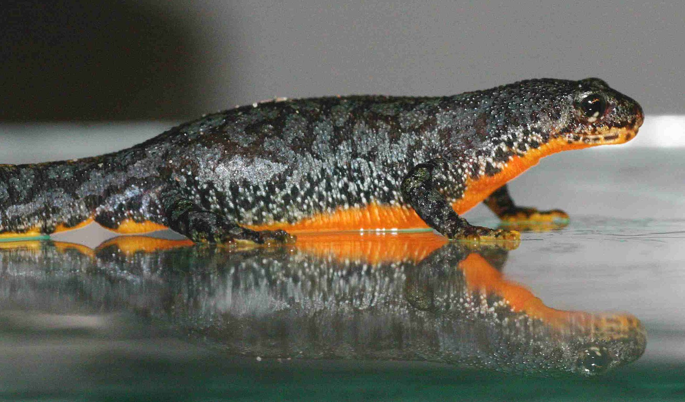
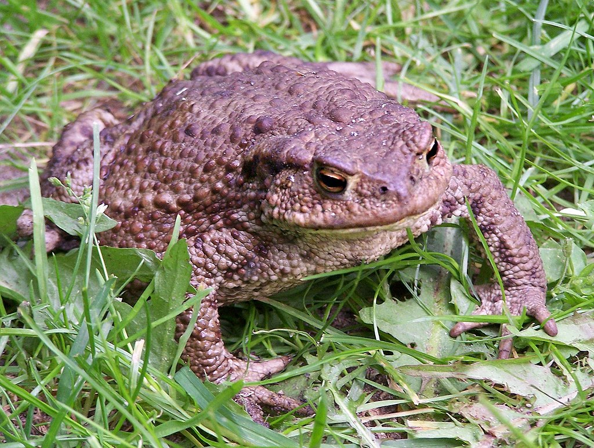
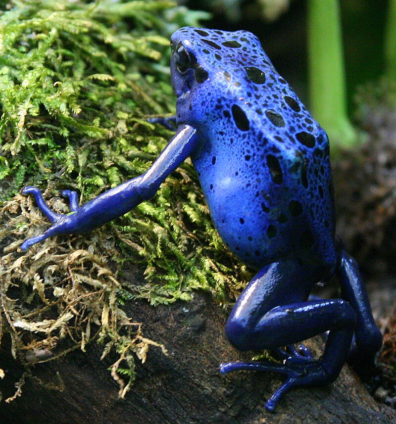

Rana verde (Hyla cinerea)
Hábitat: Zonas cercanas a cuerpos de agua dulce:
estanques, pantanos, lagunas y charcas con abundante vegetación.
Alimentación: Carnívora.
Come insectos, moscas, grillos y pequeños invertebrados que caza con su lengua pegajosa.
Dato curioso:Puede absorber oxígeno y agua directamente por la piel, por eso necesita ambientes húmedos para sobrevivir.
Informacion General: Pequeña rana de color verde brillante, común en zonas húmedas y cálidas. Su piel cambia de tono según la temperatura o la luz, lo que le ayuda a camuflarse.
Es muy ágil y se desplaza saltando entre ramas y hojas.

Salamandra común (Salamandra salamandra)
Hábitat: Bosques templados y húmedos.
Alimentación: Carnívora. Se alimenta de lombrices,
caracoles, insectos y otros pequeños animales que encuentra bajo piedras o troncos.
Dato curioso: La salamandra puede segregar toxinas por su piel para defenderse, y algunas especies incluso regeneran partes de su cuerpo, como la cola o extremidades.
Informacion General: Anfibio de cuerpo alargado, negro con manchas amarillas brillantes. Es nocturna y prefiere salir en días lluviosos.
Su aspecto colorido advierte a los depredadores de su toxicidad.

Tritón alpino (Ichthyosaura alpestris)
Hábitat: Lagos, charcas y arroyos de montaña en zonas boscosas y húmedas de Europa.
Alimentación: Carnívoro. Come insectos acuáticos, larvas, gusanos y pequeños crustáceos.
Dato curioso: Durante la época de apareamiento, el macho desarrolla un colorido vientre naranja intenso y una cresta dorsal muy vistosa.
Información general: Es un anfibio pequeño, de cuerpo esbelto y piel lisa. Alterna su vida entre el agua (en primavera y verano) y la tierra (en otoño e invierno).

Sapo común (Bufo bufo)
Hábitat: Bosques, praderas y jardines húmedos de Europa, Asia y parte de África.
Alimentación: Carnívoro. Se alimenta de lombrices, babosas, insectos y arañas.
Dato curioso: Segrega una sustancia tóxica por sus glándulas parótidas para defenderse de los depredadores.
Información general: Tiene piel rugosa y color pardo que le sirve de camuflaje. Es lento en tierra, pero excelente cazador nocturno.

Rana flecha azul (Dendrobates azureus)
Hábitat: Selvas tropicales del sur de Surinam y norte de Brasil.
Alimentación: Carnívora. Caza hormigas, termitas y pequeños insectos.
Dato curioso: Su piel produce toxinas potentes, usadas por tribus amazónicas para impregnar dardos de caza.
Información general: De color azul intenso con manchas negras. Aunque pequeña, su color brillante advierte de su veneno a los depredadores.